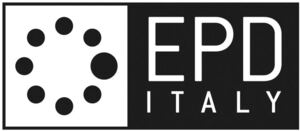

Trade Mark Journal No.2025/045 7 November 2025
WO0000001870254 (35,41,42)
Office of origin: Italy
Date of International Registration:5 March 2025
Date of designation in the UK:
5 March 2025

The trademark consists of an imprint depicting a stylized rectangular label extending horizontally, divided vertically into two quadrilaterals, the quadrilateral on the right containing the wording EPDITALY in fancy characters, the portion EPD being larger in size and being placed above the remaining portion, the quadrilateral on the left containing eight circles arranged circularly, the rightmost circle being larger in size.
- Class 35
- Collation, input, compilation, systematization and filing of environmental product declarations into databases; business data analysis; statistical analysis and reporting; assistance and consultancy relating to business management and organization; corporate management assistance; compilation and analysis of data and information relating to business management; compilation of statistics; business project management services; business investigations, evaluations, expert appraisals, information and research; collating of data in computer databases; systematization of data into computer databases; business management supervision; business appraisals; input and compilation of information into computer databases; compilation and systematization of information into computer databases; information services for matters relating to business, organization, goods and services; professional business consultancy; collation, systematization, data input, processing and/or filing of computerized information for matters relating to business, organization, goods and services; advertising; business management, organization and administration; office functions, providing information in the area of global sustainable business solutions; computerised inventory control; goods or services price quotations; marketing the goods and services of others; demonstration of goods; commercial information and advice for consumers [consumer advice shop]; outsourcing services [business assistance]; procurement services for others [purchasing goods and services for other businesses]; organization of events, exhibitions, fairs and shows for commercial, promotional and advertising purposes; marketing; marketing studies; marketing analysis services; window dressing and display arrangement services; bill-posting; commercial administration of the licensing of the goods and services of others; assistance and advice regarding business organisation and management; business management consultancy; dissemination of advertising, marketing and publicity materials; commercial or industrial management assistance; production of advertising films; sponsorship search; business research; commercial intermediation services; business networking; organization, operation and supervision of loyalty and incentive schemes; publication of printed matter for advertising purposes; publication of publicity materials on-line; computerized file management; compilation of data; business management advisory services relating to franchising; business auditing; computerized data verification.
- Class 41
- Publication of specific rules for evaluating the environmental impact of a particular kind of product; publication of environmental product declarations; publication of manuals; publication of newsletters; publication of training manuals; publication of printed matter; education; providing of training; entertainment; sporting and cultural activities; publishing of environmental information; publication and editing of magazines and books; publishing and editing of electronic magazines; electronic publishing; publishing services; musical entertainment services; certification of awards in education and training; organization of exhibitions for cultural or educational purposes; arranging and conducting of concerts, conferences and symposiums; arranging and conducting of courses, seminars and workshops; conducting of educational courses and training courses; teaching; academies [education]; live entertainment production services; educational examination.
- Class 42
- Services of certification of environmental product declarations; services of validation of environmental product declarations; verification of environmental product declarations; definition and development of specific rules for evaluating the environmental impact of a particular kind of product; technical measuring and testing services; development of measuring and testing methods; technical testing and quality control services; quality control testing and consultancy relating thereto; testing services for the certification of quality or standards; quality testing of products for certification purposes; testing, analysis and evaluation of the goods of others for the purpose of certification; testing, analysis and evaluation of the goods and services of others for the purpose of certification; testing, analysis and evaluation of the services of others for the purpose of certification; analysis of environmental properties and of the climate impact of goods and services; certification of goods and services relating to environmental properties and of the climate impact; consultancy services in matters relating to certification of environmental and climate impact; providing information relating to environmental and climate certification; information and consultancy services in matters relating to global standardization activities; scientific and technological services and research and design relating thereto; industrial analysis, industrial research and industrial design services; quality control and authentication services; design and development of computer hardware and software; quality control services for certification purposes; quality control of services; product certification services; research regarding environmental protection; writing technical standards relating to certification and official approval of goods and services; encryption, decryption and authentication of information, messages and data; quality assessment; authentication services relating to environmental information declarations; providing quality assurance services; advisory services in the field of product development and quality; consultancy services in matters relating to environmental and climate impact; providing information relating to environmental and climate impact; research in the field of climate change; preparation of technical manuals and reports; programming of computer software for reading, transmitting and organising data; materials testing and evaluation; evaluation of results from quality control tests conducted on goods and services; technological research; technological monitoring and inspection; chemical analysis; development of new technology for others; quality audits; research and development of products; testing of materials; performance of chemical analyses; computer programming consultancy; computerised data storage.
ISTITUTO CERTIFICAZIONE E MARCHIO, DI QUALITA' PER PRODOTTI E SERVIZI, PER LE COSTRUZIONI ENUNCIABILE ANCHE COME ICMQ
Representative: Dr. Modiano & Associati SpA, Via Meravigli 16, I-20123 Milano, ITALY